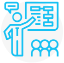

Общие собрания собственников многоквартирных домов
с использованием системы «Активный гражданин»
«Электронный дом» - это
Уникальный проект, который дает возможность организовать и провести общее собрание собственников помещений многоквартирного дома online.
Больше не нужно подстраивать свой график под очные собрания собственников!
Чтобы поучаствовать в жизни собственного дома, достаточно проголосовать через «Активный гражданин» - для этого нужны только компьютер или смартфон.
Общие собрания собственников через
«Электронный Дом» - это:
-
Электронная заявка
Автоматическое формирование сообщения о собрании в заочной форме на основании электронной заявки
-
Email и SMS Оповещения
Дополнительное информирование собственников через Email или SMS
-
Результаты на сайте
Результаты голосования, доступны для просмотра на «Активном гражданине»
-
Протокол через 1 час
Автоматическое формирование протокола общего собрания в течение часа после завершения голосования
-
Online голосования
Возможность online голосования для собственников через «Активный гражданин» или при личном визите по адресу: г. Москва, Центросоюзный переулок, дом 13, строение 3, этаж 2
-

Инициаторы
Собственники
или управляющая компания -
Участники
Собственники.
Подробнее об участии в Правилах
Что необходимо для организации
общего собрания собственников online?
-
Проведите в своем доме собрание собственников и примите на нем решение об использовании информационной системы проекта «Активный гражданин» для проведения общих собраний собственников в форме заочного голосования. Ознакомьтесь с примером повестки подобного собрания.
-
Проверьте внесение Вашего дома в реестр многоквартирных домов, в которых общее собрание собственников проводится с использованием информационной системы проекта «Активный гражданин».
-
- Зарегистрируйтесь в системе «Активный гражданин»;
- Укажите адрес собственности;
- Установите связь с вашим профилем на портале mos.ru;
- Укажите в личном кабинете mos.ru ФИО, СНИЛС, паспорт и дату рождения;
- Убедитесь, что указанные данные прошли проверку Как связать профили? -
С помощью электронной формы подачи заявки в разделе «Электронный дом» сформируйте сообщение о проведении общего собрания собственников помещений в многоквартирном доме в заочной форме. Подать заявку?
С момента завершения голосования:
-
Через час собственники смогут ознакомиться с решением дома в «Активном гражданине».
-
Через 5 рабочих дней инициатор сможет забрать протокол и сопроводительное письмо администратора общего собрания по адресу:
Москва, Центросоюзный переулок, дом 13, строение 3, этаж 2. По рабочим дням с 10.00 до 19.00 с учетом перерыва на обед с 13.00 до 14.00 -
В течение 10 дней инициатору необходимо
предоставить протокол и сопроводительное
письмо в свою управляющую организацию или свое
товарищество собственников недвижимости для последующей передачи в Мосжилинспекцию.
Вопросы и ответы
-
Что такое общее собрание собственников многоквартирного дома?
Это орган управления домом. Решения и протокол общего собрания собственников являются официальными документами, влекущими за собой юридические последствия в виде обязанностей в отношении общего имущества в доме, изменение объема прав и обязанностей или освобождения этих собственников от обязанностей.
-
Как происходит верификация адреса собственности при голосовании на общем собрании собственников?
Данные собственников, которые приняли участие в голосовании, будут проверяться на соответствие сведениям, содержащимся в едином государственном реестре недвижимости (ЕГРН) и в Едином личном кабинете на портале mos.ru. Жители в праве предоставить документы, подтверждающие право собственности администратору общего собрания при личном визите.
-
Как будут информировать собственников помещений о том, что проводится общее собрание собственников?
Дополнительное информирование всех зарегистрированных пользователей проекта «Активный гражданин» (далее – Проект), в том числе, зарегистрированных представителей юридических лиц осуществляется по e-mail с использованием Проекта. Юридическое лицо может выписать доверенность сотруднику, попросить его зарегистрироваться в проекте «Активный гражданин» на рабочий телефон, указать адрес собственности фирмы и получать уведомления.
При этом, обязанность оповещения собственников не снимается с инициатора в текущем постановлении Правительства города Москвы от 27.02.2018 N115-ПП.
-
Как провести общее собрание собственников для принятия решений о проведении заочных голосований с использованием системы проекта «Активный гражданин»?
Проведите очное собрание собственников помещений в доме для принятия следующих решений:
- выбор в качестве информационной системы заочной формы голосования проект «Активный гражданин»;
- определение Департамента информационных технологий города Москвы администратором общего собрания;
- о порядке приема администратором сообщений о проведении общих собраний в форме заочного голосования, решений собственников помещений в соответствии с положениями, установленными Департаментом информационных технологий города Москвы;
- о продолжительности голосования по вопросам повестки дня общего собрания в форме заочного голосования с использованием информационной системы проекта «Активный гражданин» в соответствии с положениями, установленными Департаментом информационных технологий города Москвы;
- о согласии представления администратором общего собрания протокола общего собрания без приложения реестра собственников помещений в многоквартирном доме в целях защиты их персональных данных.
Не забудьте указать в протоколе контакты для связи! В соответствии с Жилищным кодексом РФ предоставьте протокол данного собрания в Мосжилинспекцию через свою управляющую организацию. Протокол рассматривается на предмет соответствия требованиям законодательству РФ в течение 10 рабочих дней с момента его поступления в Мосжилинспекцию.
В течение 5 дней после согласования Мосжилинспекцией протокола Департамент информационных технологий города Москвы включает дом в реестр домов, в которых общее собрание проводится с использованием проекта “Активный гражданин”
Полные требования к проведению первого собрания собственников опубликованы на сайте «Активный гражданин» http://ag.mos.ru/house/rules.
-
Как принять участие в заочном общем собрании собственников тем, кто не имеет возможности или не хочет проголосовать в электронной форме?
Проект «Электронный дом» запущен по инициативе москвичей с целью создания дополнительных условий для участия жителей города Москвы в управлении многоквартирными домами.
Москвичи, которые не хотят, принимать участие в проекте вправе продолжать использовать привычные им способы сбора и учета мнения жителей и собственников дома.
Для использования системы «Активный гражданин» при проведении общих собраний собственников в заочной форме необходимо на очередном или внеочередном собрании принять следующие решения:
- Выбор в качестве информационной системы заочной формы голосования проект «Активный гражданин»;
- Определение Департамента информационных технологий города Москвы администратором общего собрания;
- О порядке приема администратором сообщений о проведении общих собраний в форме заочного голосования, решений собственников помещений в соответствии с положениями, установленными Департаментом информационных технологий города Москвы;
- О продолжительности голосования по вопросам повестки дня общего собрания в форме заочного голосования с использованием информационной системы проекта «Активный гражданин» в соответствии с положениями, установленными Департаментом информационных технологий города Москвы;
- О согласии представления администратором общего собрания протокола общего собрания без приложения реестра собственников помещений в многоквартирном доме в целях защиты их персональных данных.
Без принятия указанных выше решений собственников использование системы «Активный гражданин» для проведения общего собрания собственников в соответствии с действующим Жилищным Кодексом Российской Федерации (далее – ЖК РФ) и постановлением Правительства Москвы от 27.02.2018 № 115-ПП невозможно. В соответствии с ЖК РФ такие решения принимаются большинством голосов от общего числа голосов, принимающих участие в собрании, при наличии кворума (50%+1 голосов). Соответственно, если большинство жителей собственников помещений в доме не хотят использовать систему «Активный гражданин» в качестве площадки для проведения общего собрания собственников, они не станут выбирать его на очном собрании собственников.
Для лиц, представляющих интересы собственников, представителей юридических лиц собственников и лиц, не имеющих возможности совершить голосование в электронной форме через систему «Активный гражданин», есть возможность отдать свое решение по вопросам повестки дня общего собрания администратору, по адресу: Москва, Центросоюзный переулок, дом 13, строение 3, этаж 2 в срок, в течение которого проводится голосование.
-
Полномочия общего собрания собственников помещений в многоквартирном доме
Согласно ст. 44 Жилищного кодекса Российской Федерации (далее – ЖК РФ), общее собрание собственников в доме принимает решения по следующим вопросам:
- реконструкция и капитальный ремонт многоквартирного дома (в том числе по вопросам формирования и использования фонда капремонта, получения кредита на капремонт);
- строительство на придомовой территории и пределы использования земельного участка (например, оборудование детской площадки, ограничение въезда на участок многоквартирного дома и т. д.);
- пользование общим имуществом (утверждение лиц, уполномоченных на заключение договоров об использовании общего имущества многоквартирного дома);
- выбор способа управления многоквартирным домом;
- текущий ремонт многоквартирного дома;
- по организационным вопросам проведения заочного голосования, наделения полномочиями совета многоквартирного дома и его председателя;
- по иным вопросам в соответствии с ЖК РФ.
-
Как организованы общие собрание собственников?
Собрания собственников помещений в многоквартирном доме делятся на общие годовые (обязательные) и внеочередные. Общие собрания проводятся во втором квартале года, следующего за отчетным, либо в срок, установленный на общем собрании. В соответствии со ст. 45 Жилищного Кодекса Российской Федерации (далее – ЖК РФ) внеочередное собрание может быть проведено:
- по инициативе любого собственника, при этом он должен подготовить документы для его проведения:
- управляющая организация (п.7 ст. 45 ЖК РФ);
- управляющая организация или правление ТСЖ, ЖСК, ЖК по инициативе собственников (п.6 ст. 45 ЖК РФ).
Уведомление о проведении собрания направляется всем собственникам не позднее, чем за 10 дней до его проведения заказным письмом или вручается под роспись. Иной способ уведомления может быть предусмотрен решением общего собрания. Уведомление должно содержать следующую информацию:
- сведения об инициаторе собрания;
- форма проведения собрания (очное, заочное или очно-заочное голосование);
- дата, место, время проведения данного собрания или дата окончания приема решений собственников по вопросам, поставленным на голосование, и место или адрес, куда должны передаваться такие решения (при заочном голосовании);
- повестка дня;
- порядок ознакомления с информацией и (или) материалами, которые будут представлены на собрании, место или адрес, где с ними можно ознакомиться.
-
Как определить количество голосов собственника в многоквартирном доме
Согласно п.3 ст.48 Жилищного Кодекса Российской Федерации количество голосов собственника в доме на общем собрании пропорционально его доле в праве общей собственности на общее имущество в данном доме. То есть голоса распределяются не по числу собственников, а в зависимости от метража, которым владеет каждый из них. Для определения кворума требуется знать общую площадь всего дома, площадь помещения собственника (указывается в выписке ЕГРН или документе, подтверждающем право собственности), а также общую площадь жилых и нежилых помещений дома, не являющихся общим имуществом.
Количество голосов собственника на общем собрании определяется в следующем порядке:
- Установить общее количество голосов собственников:
Общее количество голосов приравнивается площади помещений всех собственников в доме, из расчета 1 голос = 1 кв.м помещения, принадлежащего собственнику. - Установить количество голосов каждого собственника
Количество голосов, которым обладает собственник помещения равно доле собственника помещения в праве общей собственности на общее имущество;
Например, в доме площадь всех жилых и нежилых помещений составляет 1 000 м². Количество голосов – 1 000. Собственник жилого помещения площадью 50 м². обладает 50 голосами.
- Установить общее количество голосов собственников: